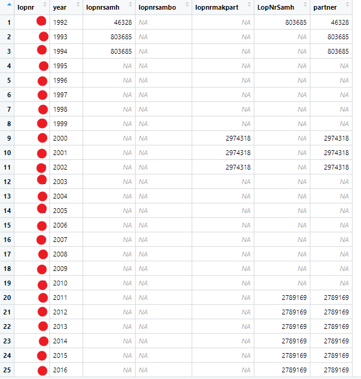

7 Housing data
Study period 2012-2020 when data is made available from SCB from the Real estate and Apartment registers. Data is taken from three SCB data sources: lev_lisa, lev_housing, and lev_population. The following steps are taken to arrive at a complete data set:
The unique identifier lopnr in the lev_population data set is filtered with the following criteria: index_p ==1 & ater_pnr == 0 & sen_pnr == 1.
Next this set of unique identifiers are matched to the full lev_lisa data set, resulting in lisa data that contains only the unique identifiers from the first step.
690 duplicate lopnr-year observations are identified and removed from the data set. Further inspection indicated this small number is a result of messy data, showing no trend or further information.
As data from lev_lisa ends in 2019 and data from the lev_housing data set ends in 2020, time invariant variables(year of birth, sex, education, etc.) from unique individuals in 2019 are replicated for 2020 to facilitate the appropriate matching to the unique identifiers in the 2020 Housing data.
Lastly, the data is joined by the unique lopnr-year combination with the lev_housing data.
7.1 Specific data considerations
7.1.1 Identifying partners
There are some discrepancies in the data when finding consistent partner matches to unique individuals across the multiple data sets.
We can find partner data in two of the datasets: partners_rtb and samh. In the partners_rtb dataset, we have three variables for every lopnr-year observation:
- Lopnrsamh – (no definition given in the excel sheet) 1987-1997.
- Lopnrsambo – “sambo’s personummer” from 1998.
- Lopnrmakpart – “make/maka/partners personummer” ( I believe this is technically married) from 1998.
From the samh dataset, we have one variable: * LopNrSamh – (no definition given in the accompanying excel sheet).
Since no particular partner variable was consistent over time, a new varaible is created, “partner”, that takes the value of whichever variable has valid data (of one of the above variables) for that lopnr/year. If there are two values, the priority is for the lopnrsamh from the partners_rtb dataset (it seems to have the best coverage).
A screenshot for an particular individual with multiple partners over time to illustrate.

7.1.3 Indentifying relocations
To identify when an individual has relocated in the data the following considerations are taken into account.
- The housing variables, fast_lopnr and lghlopnr appear to uniquely identify the housing location of a particular individual. Over time, a change in either variable should indicate that an individual as relocated (highlighted in orange below). This change appears to be the best indicator of whether an individual has relocated or not.

The coordinate variables, xkoord and ykoord appear to be occasionally inconsistent, giving different values for the same fast_lopnr and lghlopnr identifier in some of the data. This may be the result of data errors or possibly a GPS margin of error when measuring housing location (Highlighted yellow).
The variable n_housing counts how many unique fast_lopnr’s are associated with each lopnr. For example, individual RED, has resided in three locations, Individual BLUE has resided in two locations, and Individual 40 has resided in one location during the sample period.
The vairalbes change_housing and change_tenure take the before and after values of housing and tenure (respectively) and return the before and after categories when a change (relocation) has occurred.
Byggtyp appears to follow the patterns of fast_lopnr and lghlopnr, but contains some missing data. The missing Byggtyp value seems to be associated with the values “Övriga hus” and “Specialböstader” in housing.